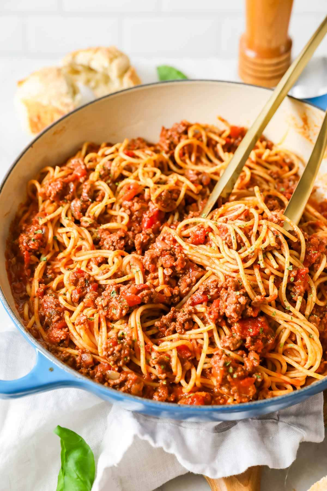

Spaghetti

Description
I like to make spaghetti. It is somewhat simple, I know how to do it, and it lasts for multiple
meals. However, I commit what some consider a culinary crime when I make my spaghetti - I break
my noodles. I am too busy, I don't have time to twist noodles on my fork.
I really enjoy spaghetti with meat sauce, but that requires dirtying 3 pots and a skillet so it
can make cleanup a real chore. Also, it's hard to drain the water. Once I accidentally dumped all
of my spaghetti noodles down the drain.
Ingredients
- Angel hair pasta (broken in half)
- Prego Traditional Sauce
- 1 pound ground beef - browned
- 4 quarts water
- 1 tsp salt
Steps
- Fill a large pot with 4 quarts of water
- Add salt to the water
- Bring the water to a boil
- Brown ground beef in a skillet while waiting for water to boil
- Add pasta to boiling water - cook to desired firmness
- In a small saucepan, warm spaghetti sauce on low to medium heat
- Add ground beef to spaghetti sauce
- Drain water off noodles
- Add sauce mixture to noodles